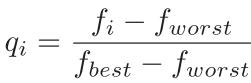
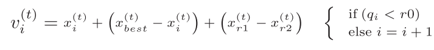
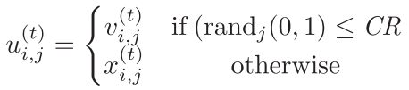

SendOnlookerBees: Stochastic Moderate-Distance Exploration of Design Space
Created on May 9, 2017 By Parsa Beheshti
From "Memetic Artificial Bee Colony Algorithm for Large-Scale Global Optimization" by Fister et al.
Contents
Function I/O
Input:
- solutionDB: Current generation data structure for candidate solutions
- objValDB: Current generation data structure for objective function values
- CR: Crossover constant passed down from main script; Will be used to determine field values of trial solution to be compared for fitness
*Output:
- solutionDB:Next generation data structure for candidate solutions
- objValDB: Next generation data structure for candidate solutions
Source Code
function [solutionDB, objValDB] = sendOnlookerBees(solutionDB, objValDB, CR)
Determines current generation minimum and maximum value; min value is best value, max value is worst
[valMin, indexMin] = min([objValDB.objVal]);
valMax = max([objValDB.objVal]);
Vectorized q property of each solution based on equation,

q = ( [objValDB.objVal]' - repmat(valMax, length(solutionDB), 1) ) ./ repmat(valMin - valMax, length(solutionDB),1);
randMat = repmat(rand(1,1),length(objValDB),1);
decQ = q > randMat;
decO = decQ ~= 1;
sampleData = reshape([solutionDB.params], size(solutionDB(1).params,2), length(solutionDB))';
r1r2 = randsample(length(objValDB), 2);
Vectorized version of mutator equation,

v = sampleData + repmat(sampleData(indexMin,:), size(sampleData,1),1)+ repmat(sampleData(r1r2(1),:)-sampleData(r1r2(2),:), size(sampleData,1),1);
v= repmat(decQ, 1, size(solutionDB(1).params,2)).*v + repmat(decO,1,size(solutionDB(1).params,2)) .* sampleData;
Vectorized crossover probability calculation, and creation of trial solution using formula given by,

decMatV = v <= CR;
decMatOrig = decMatV ~= 1;
trial = (decMatV .* v) + (decMatOrig .* sampleData);
Evaluation of objective function using trial and current generation data set.
[trialVal] = objFunc(trial);
[origVal] = objFunc(sampleData);
condition for fitness - CHANGE
decisionFit = trialVal <= origVal;
Computing next generation using data from fitness conditions.
decisionFit = repmat(decisionFit,1,size(solutionDB(1).params,2));
decisionOrig = decisionFit ~= 1;
Refer to SendEmployedBees for explanation on matrices below.
nextGenP = (trial .* decisionFit) + (sampleData .* decisionOrig);
nextGenV = (trialVal .* decisionFit(:,1)) + (origVal.* decisionOrig(:,1));
Changes the candidate solution database to the new generation of candidate solutions.
for i=1:length(solutionDB)
solutionDB(i).params = nextGenP(i,:);
objValDB(i).objVal = nextGenV(i);
Evaluates if new generation's objective value is better. If so, replaces the best value previously found with the new value, then resets the scouted counter. If not, adds 1 to scouted counter.
This is to track the improvement of a solution over n number of generations, where n is the scouted limit given by the user in runMB.
if objValDB(i).best >= nextGenV(i) objValDB(i).best = nextGenV(i); objValDB(i).scouted = 0; else objValDB(i).scouted = objValDB(i).scouted + 1; end
end
end